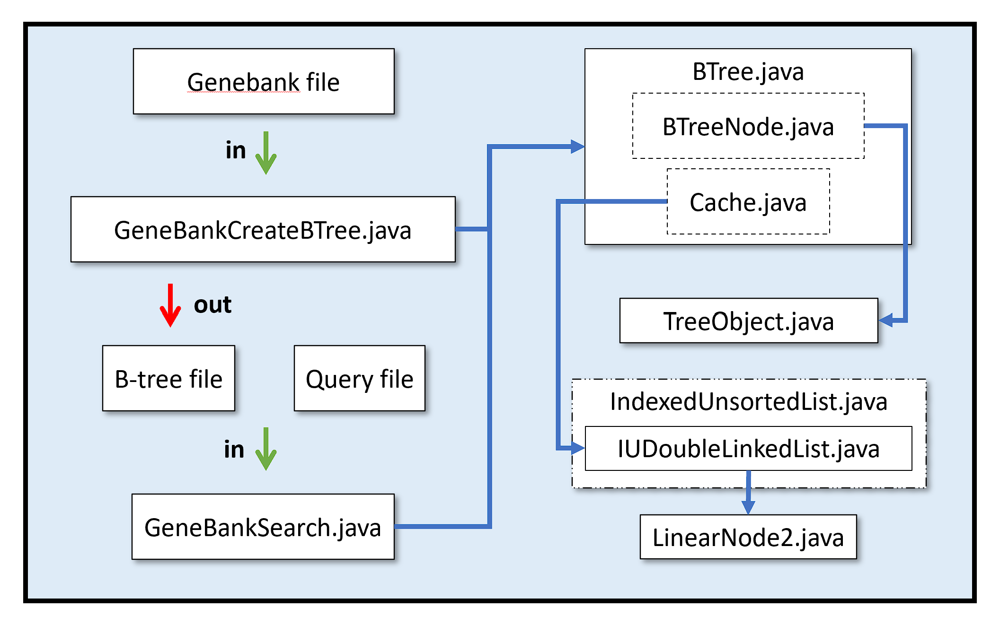

Genome Sort & Search
Fall 2018
The final project of my CS 321 Data Structures course required sorting the human genome using a balanced-tree (B-tree) data structure. The goal was to then search for the frequency of particular DNA sequences in the genome. I worked on the project over the course of a month with my partner Aaron Parish.
Efficiency was a major concern, given the human genome is billions of base pairs long. The B-tree structure allowed sorting and searching to be done at maximum theoretical efficiency (n log n time and log n time, respectively). To conserve space, base pairs are encoded as two-bit values. In addition, read and write methods are optimized for storage on a hard disc drive.
A diagram of the overall process and program structure is shown below. The process is also detailed along with a summary of the lessons learned from the project!
Genome files were obtained from the National Center for Biotechnology Information (NCBI genome maps).
Main Classes
GeneBankCreateBTree.java: Sorts a genome file and stores as a binary B-tree file.
GeneBankSearch.java: Searches for a DNA sequence in a query file.
B-Tree Classes
BTree.java: Manages the B-Tree file. Has inner classes BTreeNode.java and Cache.java.
TreeObject.java: Handles keys for B-tree nodes.
List Classes (From CS 221)
IUDoubleLinkedList.java: Manages a double-linked list of objects held in nodes.
LinearNode2.java: A node holding an object and references to other nodes in a double-linked list.
IndexedUnsortedList.java: Interface which defines the methods for IUDoubleLinkedList.java.
Other Files
Genebank: Genome from NCBI.
B-tree: Binary file containing sorted genome.
Query: Text document containing DNA sequence to search for.
Overview of Algorithm
The process of searching for the frequency of a DNA sequence can be divided into two parts: creating the B-tree and then searching for the sequences.
The bulk of the work is done in creating the B-tree with GeneBankCreateBTree.java. The steps to make the B-tree file can be summarized as:
- Parse segment of Genebank file
- Convert into binary
- Sort through B-tree
- Write to disk
For a small file, it would be reasonable to perform these steps one at a time. For a file containing the human genome, though, the RAM needed to parse the entire Genebank file before sorting and storing it would be significant. Instead, the gene sequence is broken up into pieces, and each subsequence of a user specified length is stored in a binary B-tree file. A counter for each subsequence is also stored to keep track of how many times it was found.
After creating the B-tree file, a search can be made using GeneBankSearch.java. The DNA sequences to search for are specified using a query file. The sequences are read in, converted to binary, and then searched for in the B-tree file. If found the frequency of the sequence is printed to console.
Lessons Learned
A couple of important programming best-practices were overlooked in the rush to finish the project.
It didn't seem important at the time to make a readme, but it would have been very helpful for this portfolio description! Fortunately, we did leave detailed comments.
The other oversight was not using black box testing. There are bugs remaining in the code which weren't addressed due to time limitations. General wisdom, however, is that time spent testing actually saves time debugging later on. It might have been possible to identify and fix those bugs within the allotted timeframe using a systematic debugging process.